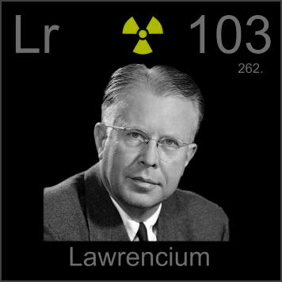

HOME
PREVIOUS
NEXT

Lawrencium
Atomic Weight: 262[note]
Density: N/A
Melting Point: 1627 °C
Boiling Point: N/A
Lawrencium, named for atom smasher Ernest Lawrence of South Dakota, is the last element with a half-life longer than an hour (3.6 hours to be exact). From here on out the elements get pretty sketchy.